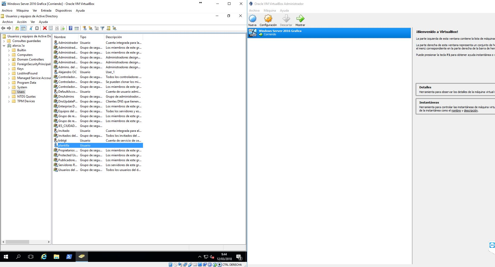
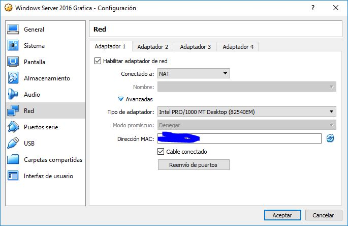

a.7) Utilización de máquinas virtuales para la administración de dominios
Se ha utilizado Oracle VM VirtualBox para la utilización de Windows Server 2016, se mostrará a continuación una serie de fotos en el cual se ve la maquina virtual creada con Windows Server.
Configuración aplicada
Se le ha asignado 4 GB para la máquina virtual y unos 50 GB de memoria para el SO, si se usa el modo de interfaz no gráfica se le puede asignar 10 GB de memoria para el SO, en la sección de red le hemos asignado un adaptador y le hemos aplicado la siguiente configuración.
